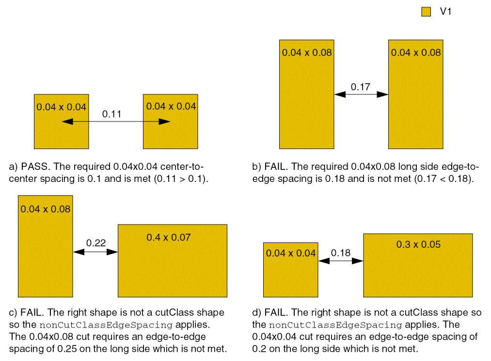

minCutClassSpacing
Specifies the minimum spacing between cuts of different classes on the same layer. This constraint enables cut class aware spacing rules. Spacing requirements depend on the following factors:
- Size of the cut (the cut class).
- For rectangular cuts, which edge (long or short) is being used.
- Whether the two cuts are on the same metal shape (sameMetal) or on the same net (sameNet)
- Whether the rules are being specified as center-to-center or edge-to-edge.
- Whether the parallel run length is greater than 0
In some processes, the spacing between two square cuts of a particular cut class which are perfectly aligned vertically or horizontally is different from the spacing for unaligned cuts.
minCutClassSpacing Quick Reference
Value Type
|
Specifies the minimum spacing between cuts of different classes on the same layer. The column header ( |
Required Parameters
Optional Parameters
|
Specifies whether the cut spacing is measured from cut-center-to-cut-center (1) or cut-edge-to-cut-edge (0). By default, cut spacing is performed cut-edge-to-cut-edge. The column header (
Type: |
|
|
Stores the cut class dimensions in an array of DualValue, each with the width and length of a cut class.
Type: |
|
|
Specifies how the constraint should be applied for each cut class combination as
Type: |
|
|
Specifies an extension distance applied only to cut shapes of rectangular cut classes before measuring cut spacing. The table layout is identical to the constraint value table.
Type: |
|
|
Specifies the default cut spacing between cut classes.
Type: |
|
|
Specifies an array of DualValue pairs, if set. The first value in each DualValue is the width of a square cut class. The second value is the spacing (or clearance), in user units, required between completely aligned horizontal or vertical cuts of the cut class.
Type: |
|
|
Determines the vias to which this constraint does not apply. This parameter is mutually exclusive with
Type: |
|
|
Determines the shapes to which the constraint applies. This parameter is mutually exclusive with
Type: |
|
|
Specifies that the constraint applies only if the parallel run length (prl) between the two via cuts is greater than or equal to this value. Both positive and negative values are allowed.
If multiple Actual length (prl) Use constraint value for length <-1 The constraint does not apply.
Type: |
|
|
Specifies the direction in which the completely aligned spacing applies.
Valid Values:
The
Type: |
|
|
Specifies whether the constraint applies only between shapes on the same mask (
Type: |
|
|
Specifies the spacing, in user units, between cutClass shapes and non-cutClass shapes (for example, blockages).
Type: |
|
|
Allows both horizontal and vertical offsets between the cut shapes to be used as parallel run lengths, if the parallel run length between the cut shapes is less than zero. When this parameter is specified, two separate checks are performed using the two offset values. If horizontal offset is used as the parallel run length, required spacing is looked up by taking into account the vertical edges facing each other, and when vertical offset is used as the parallel run length, required spacing is looked up by taking into account the horizontal edges facing each other. The maximum of the spacing values thus obtained is the required spacing. If this parameter is not specified, the smaller of the two offsets is considered as the parallel run length and spacing is looked up using this value. Because the edges that are facing each other cannot be determined, the maximum of the four possible spacing values is compared with the Euclidean spacing.
If this parameter is specified for one
minCutClassSpacing constraint defined on a particular layer, it must be specified for all minCutClassSpacing constraints defined on that layer.
Type: |
|
Examples
- Example 1: minCutClassSpacing for a Square Cut Class
- Example 2: minCutClassSpacing for a Square and a Rectangular Cut Class
- Example 3: minCutClassSpacing for a Rectangular Cut Class
- Example 4: minCutClassSpacing for Three Cut Classes
- Example 5: minCutClassSpacing with nonCutClassEdgeSpacing
- Example 6: minCutClassSpacing with bothNegativeParallelRunLengths
Example 1: minCutClassSpacing for a Square Cut Class
# default is edge-to-edge measurements. Change this to
# center-to-center (value of 1 enables center-to-center)
set_constraint_parameter -name cutClassCenterToCenter \
-TblCols { 0.10 0.10 } \
-Int2DTblValue { 0.10 1 1 \
0.10 1 1 }
# parallel run length can be >= 0. This is the default.
set_constraint_parameter -name parallelRunLength -Value 0
set_layer_constraint -constraint minCutClassSpacing \
-layer V1 \
-TblCols { 0.10 0.10 } \
-TwoDTblValue { 0.10 0.20 0.20 \
0.10 0.20 0.20 }
Specifies 0.20 user units as the cut-to-cut spacing between two VA vias (0.10x0.10), measured center-to-center.
Example 2: minCutClassSpacing for a Square and a Rectangular Cut Class
create_constraint_group -name cutClassSpacing -opType or -db tech add_constraint_group -subGroupName cutClassSpacing -groupType foundry
# edge-to-edge spacing by default
# case 1: no parallel run length
set_constraint_parameter -name parallelRunLength -Value -0.001
set_layer_constraint -constraint minCutClassSpacing \
-layer V1 -group cutClassSpacing \
-TblCols { 0.10 0.25 0.25 0.25 } \
-TwoDTblValue { 0.10 0.15 0.15 0.15 0.15 \
0.25 0.15 0.15 0.15 0.15 \
0.25 0.15 0.15 0.50 0.50 \
0.25 0.15 0.15 0.50 0.50} -create true
# case 2: parallel run length > 0
set_constraint_parameter -name parallelRunLength -Value 0.001
set_layer_constraint -constraint minCutClassSpacing \
-layer V1 -group cutClassSpacing \
-TblCols { 0.10 0.25 0.25 0.25 } \
-TwoDTblValue { 0.10 0.40 0.40 0.30 0.30 \
0.25 0.40 0.15 0.15 0.15 \
0.25 0.30 0.15 0.50 0.50 \
0.25 0.30 0.15 0.50 0.50} -create true
Assumes that a rectangular cut class (0.1x0.25) and square cut class (0.25x0.25) are defined. The following conditions apply:
- 0.30 user units is the edge-to-edge spacing between the end edge (0.10) of a VB via and a VC via with parallel edge overlap > 0
- 0.40 user units is the edge-to-edge spacing between the end edge of a VB via to another VB via with parallel edge overlap > 0
- 0.50 user units is the edge-to-edge spacing between a VC via to another VC via
- 0.15 user units is the edge-to-edge spacing for the rest of the combinations
To specify the constraint using Tcl, two minCutClassSpacing constraints must be set in an OR constraint group, one for cuts with no parallel run length (parallelRunLength parameter set to -0.001) and the other for cuts with parallel run length > 0 (parallelRunLength parameter set to 0.001). When setting the constraint values, include -create true to ensure that each constraint value is added, instead of overwriting a previously set value.
Example 3: minCutClassSpacing for a Rectangular Cut Class
create_constraint_group -name cutClassSpacing -opType or -db tech add_constraint_group -subGroupName cutClassSpacing -groupType foundry
# edge-to-edge spacing by default
# case 1: no parallel run length
set_constraint_parameter -name parallelRunLength -Value -0.001
set_layer_constraint -constraint minCutClassSpacing \
-layer V1 -group cutClassSpacing \
-TblCols { 0.10 0.25 } \
-TwoDTblValue { 0.10 0.15 0.15 \
0.25 0.15 0.15 } -create true
# case 2: parallel run length > 0
set_constraint_parameter -name parallelRunLength -Value 0.001
set_layer_constraint -constraint minCutClassSpacing \
-layer V1 -group cutClassSpacing \
-TblCols { 0.10 0.25 } \
-TwoDTblValue { 0.10 0.15 0.15 \
0.25 0.15 0.40 } -create true
Assumes that a rectangular cut class (VB) is defined (0.1x0.25). The following conditions apply:
- 0.40 user units is the edge-to-edge spacing between the side edge of a VB via to a side edge of another VB via with parallel edge overlap > 0
- 0.15 user units is the edge-to-edge spacing for all other VB of the combinations
To specify the constraint using Tcl, two minCutClassSpacing constraints must be set in an OR constraint group, one for cuts with no parallel run length (parallelRunLength parameter set to -0.001) and the other for cuts with parallel run length > 0 (parallelRunLength parameter set to 0.001). When setting the constraint values, include -create true to ensure that each constraint value is added, instead of overwriting a previously set value.
Example 4: minCutClassSpacing for Three Cut Classes
create_constraint_group -name cutClassSpacing -opType or -db tech add_constraint_group -subGroupName cutClassSpacing -groupType foundry
# This section sets the constraint with parallel run length = 0 (no overlap)
set_constraint_parameter -name parallelRunLength -Value -0.001
set_constraint_parameter -name cutClassCenterToCenter \
-TblCols { 0.1 0.1 0.1 0.25 0.25 0.25} \
-Int2DTblValue { 0.1 1 1 0 0 0 0
0.1 1 1 0 0 0 0
0.1 0 0 0 0 0 0
0.25 0 0 0 0 0 0
0.25 0 0 0 0 1 1
0.25 0 0 0 0 1 1 }
set_layer_constraint -constraint minCutClassSpacing \
-layer V1 -hardness hard -group cutClassSpacing -create true \
-TblCols { 0.1 0.1 0.1 0.25 0.25 0.25} \
-TwoDTblValue { 0.1 0.2 0.2 0.15 0.15 0.15 0.15
0.1 0.2 0.2 0.15 0.15 0.15 0.15
0.1 0.15 0.15 0.15 0.15 0.15 0.15
0.25 0.15 0.15 0.15 0.15 0.15 0.15
0.25 0.15 0.15 0.15 0.15 0.5 0.5
0.25 0.15 0.15 0.15 0.15 0.5 0.5 }
# This section sets the constraint with parallel run length > 0
set_constraint_parameter -name parallelRunLength -Value 0.001
set_constraint_parameter -name cutClassCenterToCenter \
-TblCols { 0.1 0.1 0.1 0.25 0.25 0.25} \
-Int2DTblValue { 0.1 1 1 0 0 0 0
0.1 1 1 0 0 0 0
0.1 0 0 0 0 0 0
0.25 0 0 0 0 0 0
0.25 0 0 0 0 1 1
0.25 0 0 0 0 1 1 }
set_layer_constraint -constraint minCutClassSpacing \
-layer V1 -hardness hard -group cutClassSpacing -create true \
-TblCols { 0.1 0.1 0.1 0.25 0.25 0.25} \
-TwoDTblValue { 0.1 0.2 0.2 0.3 0.15 0.15 0.15
0.1 0.2 0.2 0.3 0.15 0.15 0.15
0.1 0.3 0.3 0.4 0.4 0.3 0.3
0.25 0.15 0.15 0.4 0.15 0.15 0.15
0.25 0.15 0.15 0.3 0.15 0.5 0.5
0.25 0.15 0.15 0.3 0.15 0.5 0.5 }
Assumes three cut classes are defined for the layer: VA, VB, and VC. VA and VC are square cut classes (0.1x0.1 and 0.25x0.25, respectively). VB is a rectangular cut class (0.1x0.25). The following conditions apply:
- 0.20 user units is the cut-to-cut spacing between 2 VA vias (0.1x0.1), measured center-to-center
- 0.50 user units is the cut-to-cut spacing between 2 VC vias (0.25x0.25), measured center-to-center
- 0.30 user units is the edge-to-edge spacing between the end edge (0.1) of a VB via and a VA or VC via with parallel edge overlap > 0
- 0.40 user units is the edge to edge spacing between the end edge (0.1) of a VB via & any edges of another VB via with parallel edge overlap > 0
- 0.15 user units is the edge-to-edge spacing for the rest of the combinations. Notice that it is a symmetrical table. For instance, both the VA column to VB END and the VB END column to VA have 0.30 μm when parallel edge overlap > 0
To specify the constraint using Tcl, two minCutClassSpacing constraints must be set in an OR constraint group, one for cuts with no parallel run length (parallelRunLength parameter set to -0.001) and the other for cuts with parallel run length > 0 (parallelRunLength parameter set to 0.001). For each constraint, parameters must be set to specify center-to-center or edge-to-edge cut spacing and the parallel run length, which applies to the cut spacing. When setting the constraint value, include -create true to ensure that each constraint value is added, instead of overwriting a previously set value.
Example 5: minCutClassSpacing with nonCutClassEdgeSpacing
# nonCutClassEdgeSpacing
# edge-to-edge spacing for a 0.04x0.04 cut class or
# a 0.04x0.08 cut class to a non-cut class shape (cut or blockage)
# pairs are <edgelength> <spacing>
# first two pairs are for 0.04x0.04 square cut class; spacing 0.2
# second two pairs are for 0.04x0.08 rectangular cut class
# the spacing to the short edge (0.04) is 0.22
# the spacing to the long edge (0.08) is 0.25
set_constraint_parameter -name nonCutClassEdgeSpacing \
-ValueArrayValue { 0.04 0.2 \
0.04 0.2 \
0.04 0.22 \
0.08 0.25 }
# default is edge-to-edge measurements. Change this to
# center-to-center (value of 1 enables center-to-center)
set_constraint_parameter -name cutClassCenterToCenter \
-TblCols { 0.04 0.04 0.04 0.08} \
-Int2DTblValue { 0.04 1 1 0 0 \
0.04 1 1 0 0 \
0.04 0 0 0 0 \
0.08 0 0 0 0 }
# constraint value
set_layer_constraint -constraint minCutClassSpacing \
-layer V1 \
-TblCols { 0.04 0.04 0.04 0.08} \
-TwoDTblValue { 0.04 0.1 0.1 0.15 0.15 \
0.04 0.1 0.1 0.15 0.15 \
0.04 0.15 0.15 0.18 0.18 \
0.08 0.15 0.15 0.18 0.18 }
Assumes two cut classes are defined for the layer: VA and VB. VA is a square cut class (0.04x0.04). VB is a rectangular cut class (0.04x0.08). The following conditions apply:
- 0.1 user units is the cut-to-cut spacing between two VA vias (0.04x0.04), measured center-to-center
- 0.15 user units is the edge-to-edge spacing between the end edge (0.04) or side edge (0.08) of a VB via and a VA via
- 0.18 user units is the edge-to-edge spacing between two VB vias
- 0.2 user units is the spacing between a VA via and a non-cut class shape
- 0.22 user units is the spacing between the end edge (0.04) of a VB via and a non-cut class shape
-
0.25 user units is the spacing between the side edge (0.08) of a VB via and a non-cut class shape

Example 6: minCutClassSpacing with bothNegativeParallelRunLengths
create_constraint_group -name cutClassSpacing -opType or -db tech
add_constraint_group -subGroupName cutClassSpacing -groupType foundry
# This section sets the constraint with parallel run length = -0.1
set_constraint_parameter -name parallelRunLength -Value -0.1
set_constraint_parameter -name bothNegativeParallelRunLengths -BoolValue true
set_layer_constraint -constraint minCutClassSpacing \
-layer V1 -hardness hard -group cutClassSpacing -create true \
-TblCols { 0.1 0.2 0.2 0.4} \
-TwoDTblValue { 0.1 0.2 0.2 0.2 0.22 \
0.2 0.2 0.2 0.21 0.23 \
0.2 0.2 0.21 0.3 0.3 \
0.4 0.21 0.23 0.3 0.3 }
# This section sets the constraint with parallel run length = -0.2
set_constraint_parameter -name parallelRunLength -Value -0.2
set_constraint_parameter -name bothNegativeParallelRunLengths -BoolValue true
set_layer_constraint -constraint minCutClassSpacing \
-layer V1 -hardness hard -group cutClassSpacing -create true \
-TblCols { 0.1 0.2 0.2 0.4} \
-TwoDTblValue { 0.1 0.2 0.2 0.2 0.22 \
0.2 0.2 0.2 0.21 0.24 \
0.2 0.2 0.21 0.3 0.3 \
0.4 0.21 0.23 0.3 0.3 }
Defines spacing between two cut shapes of type VA (0.2x0.1) and VB (0.2x0.4) with parallel run length (PRL) -0.1 and -0.2.
Related Topics
Return to top